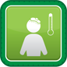

CHW Overview
Cough
Diarrhea

Fever
Bednets
Vaccinations
Hygine and Sanitation
Nutrition
Water Treatment
Safe Food Handling
Antenatal Care
Newborn Care
Family Planning
 CHW Overview
CHW Overview
 Cough
Cough
 Diarrhea
Diarrhea
 Hygine and Sanitation
Hygine and Sanitation
 Safe Food Handling
Safe Food Handling